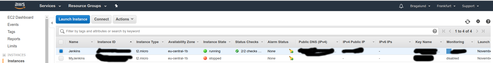

Devops innlevering
Github-repoet kan finnes på: https://github.com/Bragalund/DevOpsInnlevering
Film med gjennomgang av pipeline og komponentene I den: https://youtu.be/rnuZRCucUbo
Endepunkt:
/hostname angir docker-container-id’en som springserveren kjører I. ---> hostname
/health angir hvordan serveren har det. ---> health
/info Gir litt info om appen. Den er stygt formattert I json. ---> info
Hensikten med dette prosjektet er å lage en automatisert pipeline.
Applikasjonen har ikke vært i fokus.
Beskrivelse av appen:
Kildekoden består av 3 moduler:
- ansible
- documentation-viewer
- springserver
Jenkins-serveren min kjører på en virtuell 64-bits ubuntu-maskin på Amazon Web Services.
Kubernetes-clusteret og applikasjonen kjører på google cloud.
Hele hensikten med å kjøre byggserveren på AWS og selve appen på Google Cloud er å bevise at det er mulig.
Det hadde vært enklere/sikrere(via internt nett) å kjøre alt på samme cloud-plattform.
Hvorfor DevOps?
Fordelen med et slikt automatisk deployment-oppsett er at det følger ‘Continous Delivery’-prinsippet med mange små forbedringer over tid. Den automatiserte pipelinen gjør det enklere for utviklere å gjøre endringer som raskt ender opp I produksjon og å se virkningene av dem. Det gjør utviklingen raskere og med mindre konfigurasjon frustrasjon underveis. Det er lettere å sørge for bedre sikkerhet og mindre bugs I applikasjonen når stegene applikasjonen må gjennom før den havner I produksjon er definert. Det er enklere å reflektere over sikkerheten I alle stegene I deployeringsprossessen. Det er også enklere å justere tilganger til ulike filer I prosjektet kan enklere defineres. Miljø-variabler og andre hemmeligheter er samlet på noen definerte steder og trengs ikke å hardkodes. Det er enklere å sette føringer på protokollbruk og hvordan man bruker arkiveringssystemet for kildekoden.
Ting jeg har gjort som ikke er like enkelt å vise
1. Opprette git-repo og initialisere git I prosjektet med ansible/bash-script.
2. servere er ikke husdyr, de er gårdsdyr”
Installere programmer og gjøre konfigurasjon til kode med hjelp av ansible. Jeg føler jeg har klart å overholde prinsippet: “servere er ikke husdyr, de er gårdsdyr” i denne oppgaven. Det er fortsatt mye konfigurasjon man må gjøre selv, men jeg har laget en anible-playbook som gjør deler av oppsettet enklere.
Mulige forbedringer
1. Pushe docker-bildene fra jenkinsserveren til docker-hub Pushe docker-bildene fra jenkinsserveren til docker-hub og deretter sette opp webhooks I google-cloud for å hente og deployere container-bildene på clusteret. Det hadde gjort pipelinen litt mer ‘de-coupled’. Siden dette prosjektet er open-source, så hadde ikke denne løsningen gjort noe, men hadde kildekoden vært skjult, så hadde det å pushe docker-bildene(public) til docker-hub ikke vært bra.
2. Laget pods med flere docker-containere i Jeg kunne fått react-appen documentation-viewer til å snakke med springserveren ved hjelp av API-kall. Dette var den initielle tanken i prosjektet. Det var å få react-appen(documentation-viewer) til å være gatewayen av applikasjonen og springserveren til å være ‘back-end’ delen. Prosjektet ville da hatt en enkel microservice-struktur med hardkodede IP-addresser osv. Med andre ord, en løsning uten eureka, zuul, rabbitMQ og andre ting som hadde gjort “Over-headen” på dette prosjektet mye større.
3. Unødvendig steg I jenkinsfile Det første steget I jenkinsfile(sh(‘ansible-playbook main.yml’)) er helt unødvendig å kjøre som steg på en byggserver. Jeg har det der for å bevise at jeg kan kjøre ansible.
4. Større bruk av Environment variabler Større bruk av Environment variabler I scripts for å gjøre det mer modulerbart og gjenbrukbart for andre prosjekter. F.eks. Bruke envconsul istedenfor environment variabler I jenkins-serveren.
5. Bedre bruk av git. Hittil har jeg jobbet alene og har ikke benyttet meg av andre grener enn master. Det hadde vært mulig å opprette en “kanari”-branch kalt development, som kunne kjørt de samme jenkinsfile-stegene som master(produksjons-gren), bortsett fra deploy-delen.
6. Selenium For å ende-til-ende teste applikasjonen så hadde det vært mulig å sette opp et avsluttende steg på byggserveren som kjørte selenium tester på den kjørende applikasjonen.
7. Unit og mindre integrasjonstester tidlig I pipelinen Det er viktig å ha unit-tester og mindre integrasjonsstester tidlig I pipelinen, for å unngå at bugs/sikkerhetsrisiko havner I den kjørende applikasjonen. Det kan stoppe store feil tidlig og spare bedriften for nedetid/kostnader.
Sikkerhet
Fakorer jeg ser på som bra:
1. Bruk av SSH Jeg benytter ssh til å konfigurere serverne mine.
2. Ingen hardkodede passord er committet I git Og alle passord på alle tjenestene er minimum 14 karakterer I lengde og består av store/små/tall/spesialtegn og er ganske tilfeldige.
3. Service-account på google cloud Kommunikasjonen mellom jenkinsserveren og Google cloud skjer etter å ha autentisert med en json-fil som autoriserer shellet til å kommuniserer med DevOpsEksamen-prosjektet på Google cloud. Kommunikasjonen benytter OAUTH-protokollen(256-bit AES-kryptering).
Ting som burde ha vært bedre på sikkerhetssiden av dette prosjektet:
1. Står i dokument.
2. Står i dokument.
3. Alt på samme skytjeneste Byggserver og kubernetes-cluster burde ha vært på samme skytjeneste. Man kunne da ha brukt det interne nettet(med interne IP-adresser) som hadde gjort trafikken mellom applikasjonene mindre utsatt for ‘det store åpne internett’. Jeg har benyttet to ulike skytjenester bare for å bevise at det er mulig og fordi jeg syntes det virket morsomt å få det til. Fordelen med dette er at jeg fordeler datakraften/nettverkstrafikken jeg bruker, så jeg bruker mindre gratis “credits” på de forskjellige skytjenestene.
4. Overvåking Loggetjeneste I applikasjonen. Applikasjonen burde ha hatt en overvåkningsfunksjon. Den har det gjennom actuator I springserveren, men den er veldig enkel. ELK-stacken hadde vært kult å implementere, men det har jeg ikke satt meg inn I pga tid. Munin på toppen av en apache-server hadde vært mulig å installere på VM’en på byggserveren, men AWS har ganske god overvåkning under “monitor”-fanen I konsollet med oversikt over alle instansene(VM’ene).
6. Sikkerhetstester på kjørende applikasjon Det hadde også vært mulig å kjøre automatiserte sikkerhetstester av den kjørende applikasjonen med zenmap(port-scanning), arachni(XSS), sqlmap(SQL-injection), osv. Med et program kalt gauntlt (http://gauntlt.org).
For å bygge prosjektet som containere
I roten av prosjektet$ docker-compose build
Bygge individuelt
- I springserver-modulen:$ mvn clean install
- I documentation-viewer-modulen:
$ npm install
$ npm run start
Beskrivelse av pipelinen
1. localhost
Her kan man kjøre bash/ansible-script for å sette opp github-repo og initialisere git lokalt.Man kan også kjøre ansible-playbook via ssh til en remote VM for å installere de mest grunnleggende programmene for å kjøre dette prosjektet.
Man må da endre hosts:-feltet i main.yml og legge inn den hosten i /etc/ansible/hosts-fila. (hvis ansible er installert på ubuntu).
2. github
Arkiverer koden.3. jenkinsserver
Jenkinsserveren har webhooks til dette repoet og sjekker om det er kommet nye commits til koden hvert 5-minutt.Jenkinsserveren kjører stegene i jenkinsfilen.
Blant annet å kjøre testene i koden, bygge docker-containere og deployere appen til google cloud.
Appen blir også skalert.

Det første steget(ansible-playbook main.yml) er helt unødvendig å kjøre som steg på en byggserver.
Dette skulle egentlig ha blitt kjørt som en kommando(ansible-playbook) på en egen maskin for å automatisere serveroppsett.

4. google cloud
Kjører kubernetes-cluster med denne siden som endepunkt.Det er en spring server som kjører på port 80.
,----.. .--,-``-.
,---, / / \ / / '.
.' .' `\ / . : ,-.----. ,--./ ../ ;
,---.' \ . / ;. \\ / \ / /|\ ``\ .`- '
| | .`\ | .---.. ; / ` ;| : | .--.--. ' / ' \___\/ \ :
: : | ' | ,---. /. ./|; | ; \ ; || | .\ : / / ' / / / \ : |
| ' ' ; : / \ .-' . ' || : | ; | '. : |: || : /`./ / / , / / /
' | ; . | / / |/___/ \: |. | ' ' ' :| | \ :| : ;_ \ '\ \ \ \ \
| | : | '. ' / |. \ ' .' ; \; / || : . | \ \ `. \ \ ' ___ / : |
' : | / ; ' ; /| \ \ ' \ \ ', / : |`-' `----. \ \ . | / /\ / :
| | '` ,/ ' | / | \ \ ; : / : : : / /`--' / \__\./ ,,/ ',- .
; : .' | : | \ \ | \ \ .' | | : '--'. / \ ''\ ;
| ,.' \ \ / '---" `---` `---'.| `--'---' \ \ .'
'---' `----' `---` `--`-,,-'